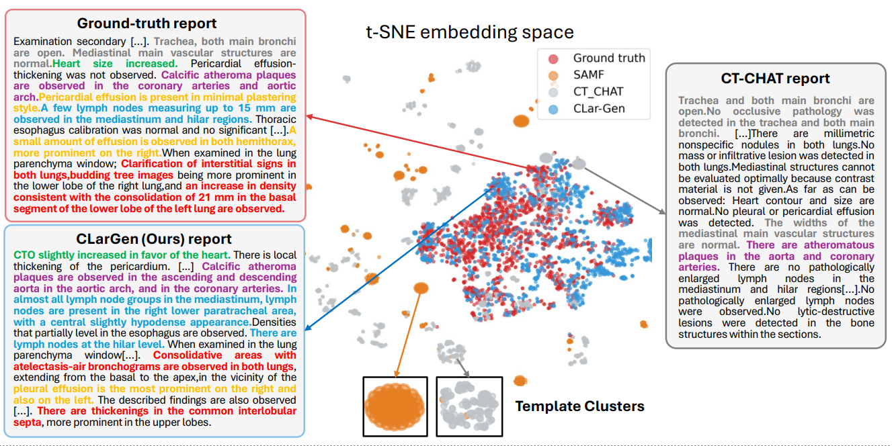
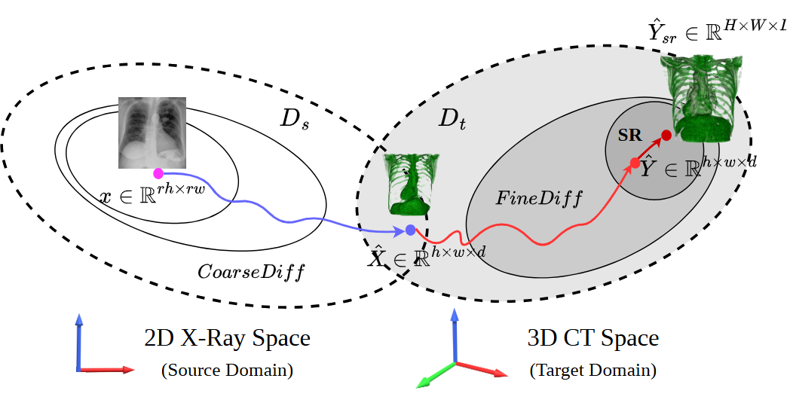

The Lancet MIT

Ph.D. Student @ Technical University of Munich, Germany
I am a Ph.D. student at the lab for AI in Medical Imaging (AI-Med) at the Technical University of Munich, Germany, supervised by Prof. Christian Wachinger, and mentored by Prof. Björn Ommer. I am affiliated with MCML and relAI.
My research passion lies at the intersection of computer science, medicine, and 3D computer vision, developing cutting-edge, trustworthy AI tools for medical applications, particularly in generative models, self-supervised learning, and multi-modal learning.






MIDL (Medical Imaging with Deep Learning), 2024.
Oral presentation


CVPR (IEEE/CVF Conference on Computer Vision and Pattern Recognition), 2022.

ICRA (IEEE International Conference on Robotics and Automation), 2021.
AI Applied Scientist, PhD Intern in Generative Computer Vision
Munich, Germany
Working Student for Machine Learning Applications
Munich, Germany
Research Assistant for 3D Computer Vision
Munich, Germany
Research Assistant for Medical Applications
Munich, Germany
Algorithm Engineer Intern
Nanjing, China
Technical University of Munich (TUM), School of Computation, Information and Technology
Technical University of Munich (TUM), School of Computation, Information and Technology
Southeast University (SEU), School of Automation